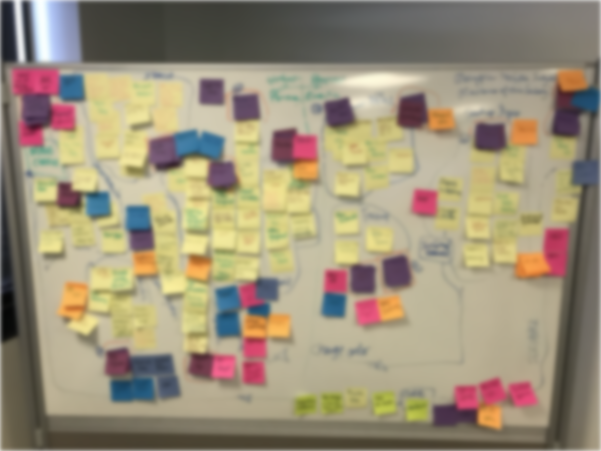
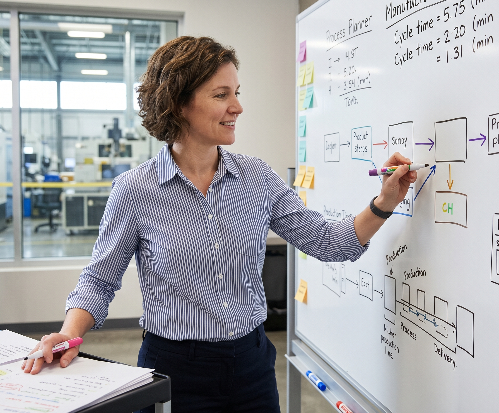
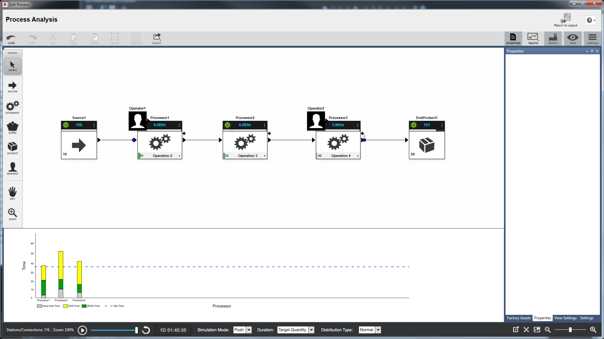
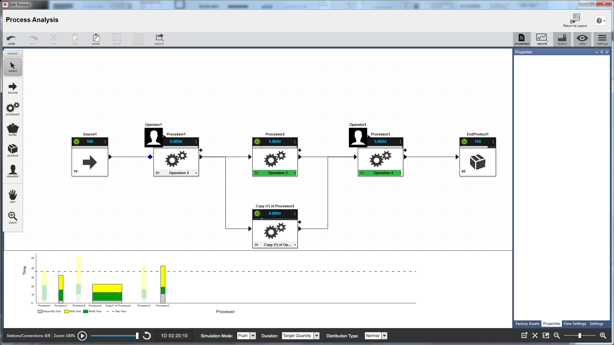
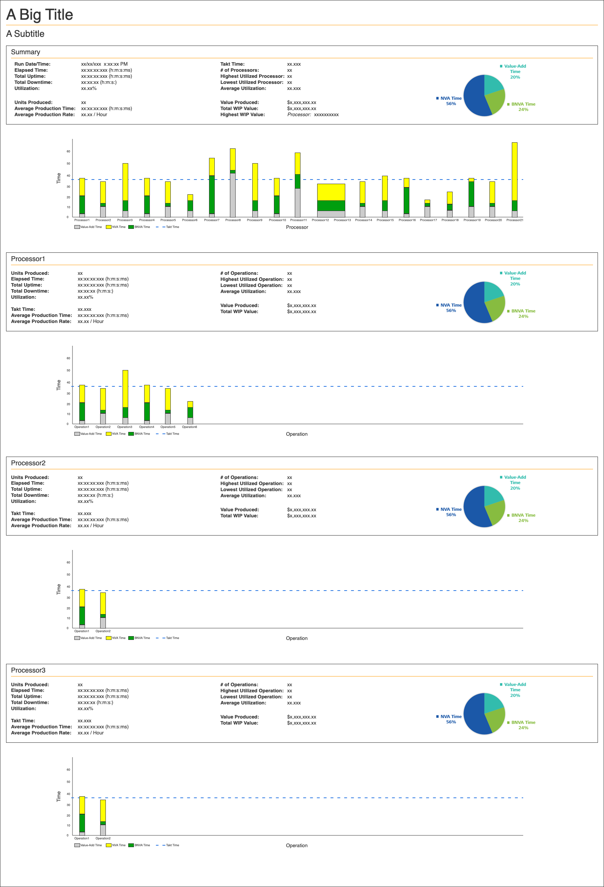
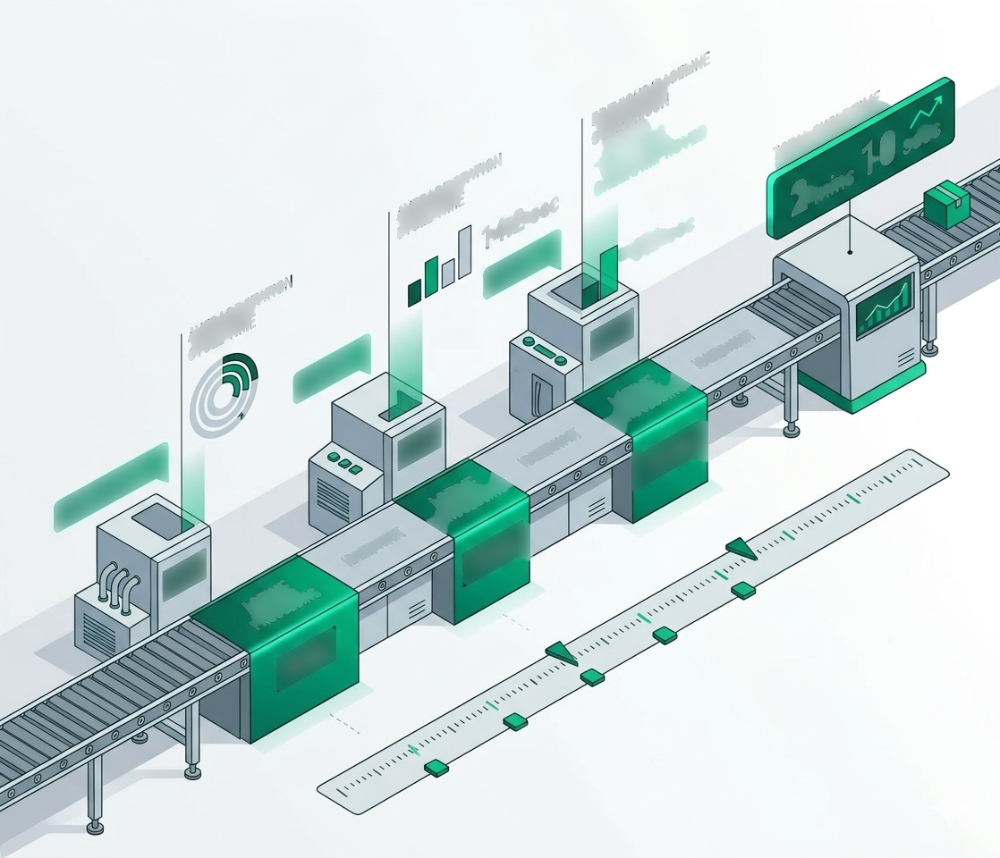
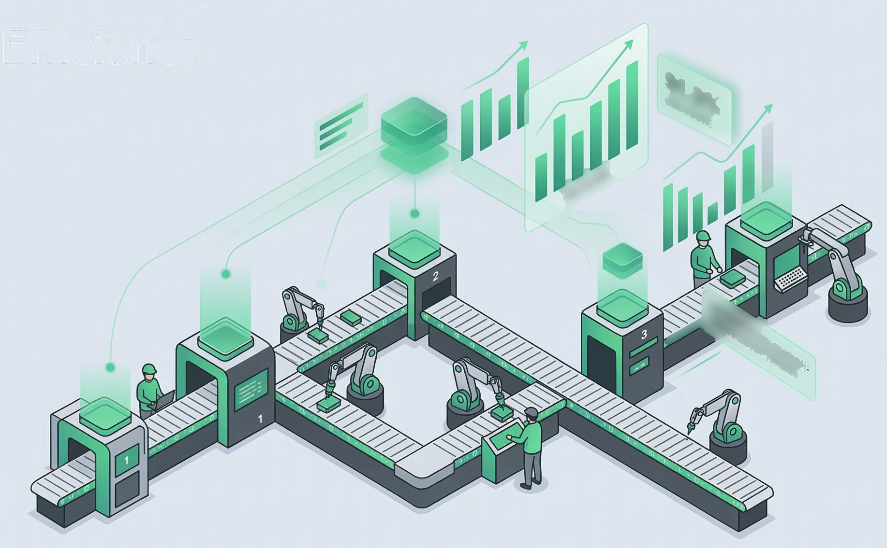

The problem
Users need reports of their simulations to share with stakeholders, but static reports don't provide real-time insight during the design process. To see how a change affected the simulation, they had to generate the report, adjust the design, and re-run the simulation. That wastes time and forces users to switch back and forth between the static report and the design, possibly many times.
My role & approach
As the lead designer, I led the team in identifying how we might improve the user experience. With a mix of internal subject matter experts and customers, we mapped out the process, identified the details needed in reports, and brainstormed how we might deliver more than simple static reports. The answer was to integrate real-time simulation monitoring into the design process, so users could adjust their designs while the simulation was running and immediately see the impact.

Persona

Sarah, 42
Sr. Process PlannerIndustrial manufacturing
“I need to see the line move, not just read about it in a cell.”
The spreadsheet struggle
Sarah represents our core user transitioning from manual planning. She manages entire factory layouts in disconnected spreadsheets, which makes it impossible to see real-time friction or predict how one station's delay affects the entire global ecosystem.
Core motivations
- Reducing simulation setup time
- Automating cycle time reporting
- Visualizing “blocked” vs. “idle” time
Current friction
- Static data hides line bottlenecks
- Manual entry leads to human error
- No real-time feedback loop
Design solution
As we built out the static reports, we explored what a real-time simulation dashboard could look like.



Reports & monitoring
We let users adjust their designs while the simulation was running, so they could immediately see the impact. Combined with our static reporting, this gave a comprehensive view of the simulation results.
Cycle Time
The Cycle Time Report provides a picture of how the process model performs overall, and helps identify potential issues or areas for improvement from an in-depth view.
Identified a 15% latency issue in the assembly sub-process.
Report details, per end product
- Simulation summary
- Production summary
- Blocked time summary
- Idle time summary
- Down time summary
- Processor cycle time charts

Line Efficiency
A line efficiency report shows how each source, operator, processor, buffer, and connection performed during the simulation.
Improved resource allocation, leading to a 10% increase in daily throughput.
Report details, per end product
- Simulation summary
- Production summary
- Processor efficiency summary
- Operator utilization summary
- Connection utilization summary
- Processor efficiency charts
- Operator utilization charts
- Connection utilization charts

Monitor Simulation
Running complex “what-if” scenarios within the digital twin to predict how changes in layout or staffing will affect the final results.
Validated the new factory layout virtually before a single machine was moved.
Report details, per end product
- Station-by-station time logs
- Idle time vs. active time analysis
- Historical cycle comparisons
Result & reflection
We helped process planners move away from spreadsheets toward a more dynamic, real-time approach to process analysis.
40% efficiency gain